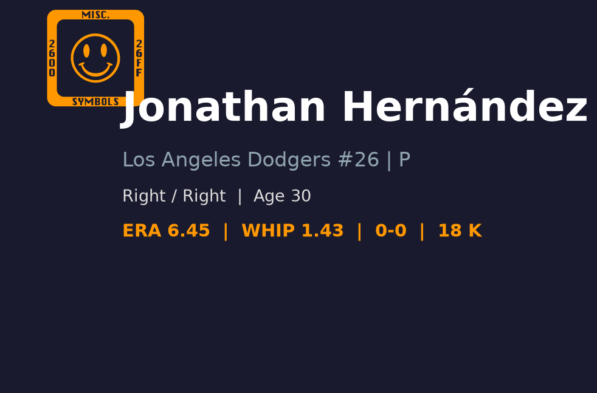

⚾ Jonathan Hernandez
Los Angeles Dodgers #26 | 后援投手（长中继） | 活跃

基本信息
球探总评
Jonathan Hernandez 是一名右投后援，具备不错的速球-滑球基础，但控球稳定性和被长打控制一直是瓶颈。2026 年在道奇牛棚中担任深度后援/长中继角色，负责在球队大幅领先或落后时消耗局数，保护核心后援手臂。他的三振能力中等，BB/9 接近 4.6，需要在控球精进上持续努力。30 岁的他正处于投手成熟期，但若无明显进步，长期前景将停留在名单边缘。
🏆 职业生涯亮点
🌟 2016 - 游骑兵签下国际自由球员
以国际自由球员身份加盟德州游骑兵，开启职业棒球生涯。
🌟 2019 - 大联盟首秀
2019 年 8 月 21 日在大联盟完成首秀，展现速球潜力但控球不稳。
🌟 2021 - Tommy John 手术
接受手肘韧带重建手术，错过大量比赛，角色逐渐从先发转向后援。
🌟 2025 - 转战道奇
辗转来到洛杉矶道奇体系，在 3A 与大联盟之间往返，寻找稳定角色。
🌟 2026 - 道奇深度后援
在道奇牛棚担任长中继 / 低杠杆后援，负责吃局数和保护主力后援手臂。
📊 2026赛季投球数据
📊 赛季对比
投球数据对比
| 赛季 | 球队 | G | GS | W | L | ERA | IP | K | BB | WHIP | SV |
|---|---|---|---|---|---|---|---|---|---|---|---|
| 2022 | Texas Rangers | 29 | 0 | 2 | 3 | 2.97 | 30.1 | 27 | 17 | 1.42 | 4 |
| 2023 | Texas Rangers | 33 | 0 | 1 | 2 | 5.40 | 31.2 | 34 | 15 | 1.58 | 0 |
| 2024 | - | 29 | 1 | 3 | 1 | 5.40 | 43.1 | 39 | 28 | 1.59 | 0 |
| 2024 | Seattle Mariners | 3 | 0 | 0 | 0 | 11.57 | 2.1 | 3 | 2 | 1.71 | 0 |
| 2024 | Texas Rangers | 26 | 1 | 3 | 1 | 5.05 | 41.0 | 36 | 26 | 1.59 | 0 |
| 2026 | Los Angeles Dodgers | 16 | 0 | 0 | 0 | 5.68 | 25.1 | 22 | 13 | 1.34 | 0 |
🎯 投球武器库
🔥 四缝线快速球 (Four-Seam Fastball)
94-97 mph
均速约 95-96 mph 的速球，具备基本压制力，但转速和位移不算 elite，容易被打者扎实接触。需要更好的角落控制才能在高杠杆中存活。
💫 滑球 (Slider)
84-87 mph
主要变化球，对右打者有一定威胁，但横向位移幅度和 sharpness 一般，控制落点能力尚需提升。
⚡ 伸卡球/二缝线 (Sinker)
93-96 mph
偶尔用于制造滚地球，但执行一致性不足，容易留在红中。
🔍 球探分析
压制力
K/9 仅 7.82，低于联盟后援平均。他更依赖 contact 出局，而非三振。2026 年 ERA 5.68 反映出被安打和被全垒打控制不佳，尤其是 25.1 局被击出 4 轰，HR/9 高达 1.42。
控球
BB/9 4.62 偏高，长打控制差（4 HR in 25.1 IP）。这是他无法进入高杠杆的关键瓶颈。两好球后无法收尾的问题尤其明显。
角色定位
Hernandez 在道奇牛棚中属于深度选项。在球队伤病或比分拉开时负责吃局数，保护核心后援。他的价值在于能吃 1-2 局，而不是 shut down 对手。
发展潜力
30 岁仍处于成熟期，但技术特征接近定型。若滑球 sharpness 和速球 command 没有提升，很难跳出 depth arm 角色。
✅ 优势 vs ❌ 劣势
优势 (Strengths)
- 速球球速具备大联盟后援基本门槛，可应付出赛
- 可承担多局数任务，为轮值和主力后援争取休息
- 右投对右打者组合（速球+滑球）有一定效果
- 30 岁仍处于投手成熟期，仍有微调空间
- 在道奇体系中可接受针对性机械调整
劣势 (Weaknesses)
- 三振能力低于联盟平均，难以在高压局面对付 elite 打者
- 保送率偏高，常陷入满垒危机
- 被全垒打率偏高，长打控制差
- 缺乏可靠的第三球种，配球可预测性高
- 并非高杠杆材料，无法承担 setup 或 closer 角色
📊 综合评分

总体潜力评分
深度后援 / 长中继
B- 级
🔮 未来展望
Hernandez 的未来取决于能否提升控球和降低保送。如果他能将 BB/9 压到 3.5 以下并减少长打，他有机会成为中等杠杆 setup man。否则他将长期停留在深度牛棚或 3A/MLB 边缘。道奇可能在未来寻求更稳定的右投后援来取代他的位置。30 岁是一个分水岭，若本季末无起色，他可能在休赛季被 DFA 或交易。
📖 背景故事
Jonathan Hernandez 于 2016 年以国际自由球员身份加盟德州游骑兵，2019 年 8 月 21 日在大联盟完成首秀。他在游骑兵时期展现了速球潜力，但控球始终不稳。2021 年接受 Tommy John 手术后，他的角色逐渐从先发转向后援。恢复后球速未完全回到巅峰，但他的多局数能力让他在牛棚中找到生存空间。2025-2026 年间辗转来到洛杉矶道奇，目前主要承担牛棚深度工作。